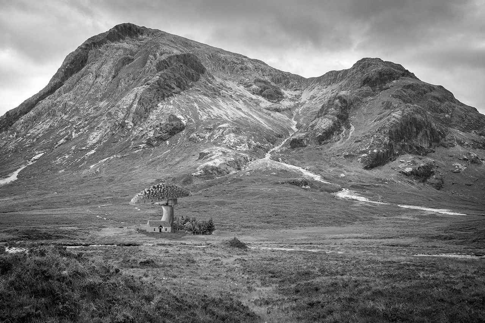

On the outside betwix the cracks of reality and likely
you're first (or last) stop when ascending. Mabel is
the wonderful (wretched) land home to many things that
probably shouldnt have the freedom to exist.
Interesting info